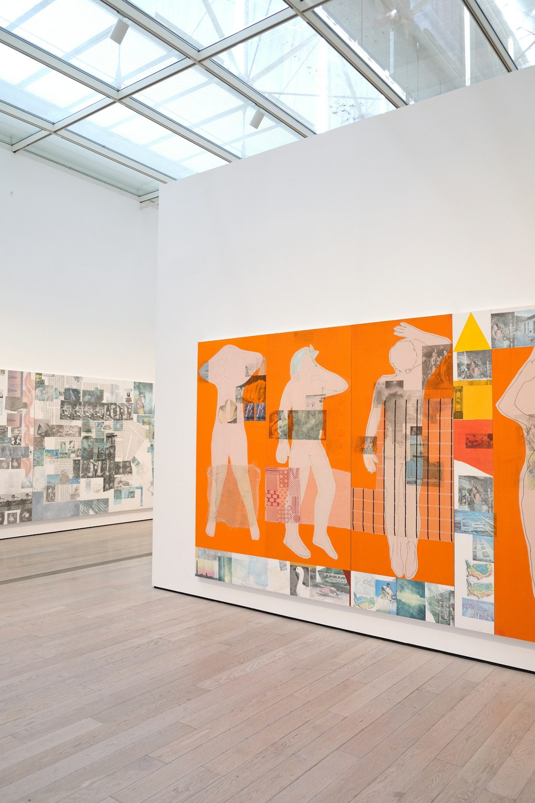

설치보다
첫 관람을 먼저.
입구의 QR이나 링크에서 바로 시작합니다. 계정과 앱 설치는 첫 관람의 조건이 되지 않습니다.
남는 과제 / 통신이 불안정한 환경01 / SeMA · Visitor experience
설치 없이 열고, 나의 시간에 맞춰 둘러보는
비엔날레 모바일 가이드.
Your time.
Your route.
오늘, 얼마나 머무르나요?

시간 선택 화면의 구성 예시. 제품 화면은 이 시안용으로 제작했으며, 사진은 실제 SeMA 현장이 아닌 참고 이미지입니다.
실제 자료를 넣기 전, 읽기 흐름과 화면 구성을 확인하는 콘셉트입니다. 아래 시나리오·설계 판단·UI는 예시이며, 실제 인터뷰나 검증 성과를 주장하지 않습니다.
01 / Overview
낯선 전시장에 도착한 순간.
어디에서 시작할지부터
쉽게 결정할 수 있다면.
이 콘셉트는 전시 정보를 더 많이 보여주는 대신, 관람을 시작하기 전에 해야 하는 선택을 줄이는 데서 출발합니다. 입구에서 링크를 열고, 머무를 시간을 고르면, 지금 볼 수 있는 경로를 제안합니다.
가이드는 작품 감상의 중심이 아니라 짧게 꺼내 보는 보조 도구입니다. 길을 확인한 뒤에는 다시 작품으로 시선이 돌아가도록 설계합니다.
02 / The moment
“40분 정도 남았는데,
무엇부터 보면 좋을까?”
문제 상황을 설명하기 위한 예시 문장입니다. 실제 관람객의 인터뷰 인용이 아닙니다.
첫 화면이 답할 질문을
하나로 좁혔습니다.
작품 목록, 전시장 위치, 작가 소개는 모두 필요합니다. 다만 처음 도착한 사람에게 이 정보를 한꺼번에 제시하면, 무엇이 자신에게 필요한지 다시 판단해야 합니다.
그래서 첫 화면의 질문을 ‘무엇을 보고 싶은가’가 아니라 ‘얼마나 머무를 수 있는가’로 바꿔보았습니다. 관심사를 이미 정한 사람에게는 전체 작품 목록을 열어두는 방식입니다.
확인할 가설 — 관람 시간이 경로 선택에 충분한 기준인지, 자유 관람을 방해하지 않는지 실제 사용자와 검증해야 합니다.
03 / Design decisions
입구의 QR이나 링크에서 바로 시작합니다. 계정과 앱 설치는 첫 관람의 조건이 되지 않습니다.
남는 과제 / 통신이 불안정한 환경머무를 시간으로 경로를 제안하되, 추천을 따르지 않고 자유롭게 탐색할 선택도 남깁니다.
남는 과제 / 예상 소요 시간의 정확도지도 전체를 이해하지 않아도 다음 작품, 이동 방향, 남은 관람 시간을 알 수 있도록 합니다.
남는 과제 / 위치 확인과 접근 가능한 동선모든 작품 · 작가 · 전시장 · 프로그램
시간 선택 → 추천 경로 → 첫 작품
같은 정보의 시작 순서를 비교하는 설명용 와이어프레임. A가 실패했다거나 B가 검증됐다는 의미는 아닙니다.
웹은 진입 부담을 낮추지만 네이티브 앱의 깊은 오프라인 지원이나 정밀한 실내 위치 기능을 그대로 기대하기 어렵습니다. 따라서 기본 정보의 캐시, 층·전시실을 직접 선택하는 대안, 현장 안내와 함께 사용할 수 있는 경로를 먼저 정의해야 합니다.
시간 기반 추천도 유일한 정답은 아닙니다. 빠르게 특정 작품을 찾는 사람에게는 목록 검색이 더 적절할 수 있습니다. 첫 화면에서 두 경로를 어떻게 구분할지 검증할 계획입니다.
04 / The experience
전시를 소개하는 화면을 여러 번 넘기지 않습니다. 링크를 열면 관람을 위한 첫 선택이 바로 보입니다.
진입 상태 / 계정 생성 없음 · 앱 설치 없음
대안 / 현장 안내 또는 전체 작품 목록
Scan to start your visit ↗
시간을 고르면 어떤 관람을 기대할 수 있는지 함께 보여줍니다. 추천은 강요하지 않고, 선택은 언제든 바꿀 수 있게 합니다.
아래 40 / 90 / 180 버튼을 눌러 시안의 선택 상태를 확인할 수 있습니다. 시간과 경로는 예시입니다.
대표 작품을 중심으로 가볍게 둘러보는 경로 예시입니다.
화면의 첫 목적은 현재 상황을 이해하고 이동하는 것입니다. 다음 작품과 방향을 먼저 보여주고, 작품의 자세한 이야기는 도착했을 때 읽도록 분리합니다.
위치 확인이 어려울 때는 전시실을 직접 선택할 수 있어야 합니다. 자동 위치 인식을 전제로만 설계하지 않습니다.
지금 위치 확인하기
05 / What comes next
성과를 채우기 전에,
무엇을 확인할지 정합니다.
현재 시안에는 실제 사용자 검증 결과가 없습니다. 첫 선택의 이해도, 경로를 바꾸는 방법, 위치 확인이 안 되는 상황을 우선적으로 검토할 계획입니다.
실제 테스트를 진행한 뒤에는 참가 조건, 수행 과제, 관찰 내용과 변경 전후 화면을 이 섹션에 넣습니다. 숫자만 크게 보여주기보다 어떤 결정이 달라졌는지를 설명합니다.
첫 화면을 보고 기대한 것과 실제 추천 화면을 비교합니다.
경로 변경과 전체 작품 탐색으로 자연스럽게 이동하는지 봅니다.
통신·위치 정보가 없을 때의 대안을 확인합니다.
A thought to take forward
이 케이스에서 보여주려는 것은 화면의 수가 아니라,
관람객에게 필요한 선택을 남기는 설계 과정입니다.